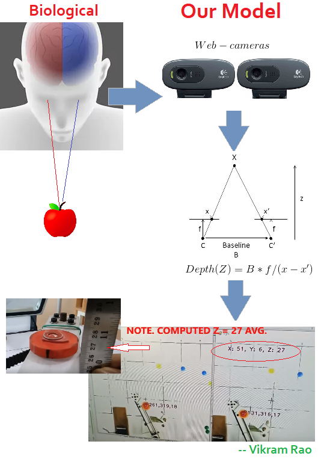
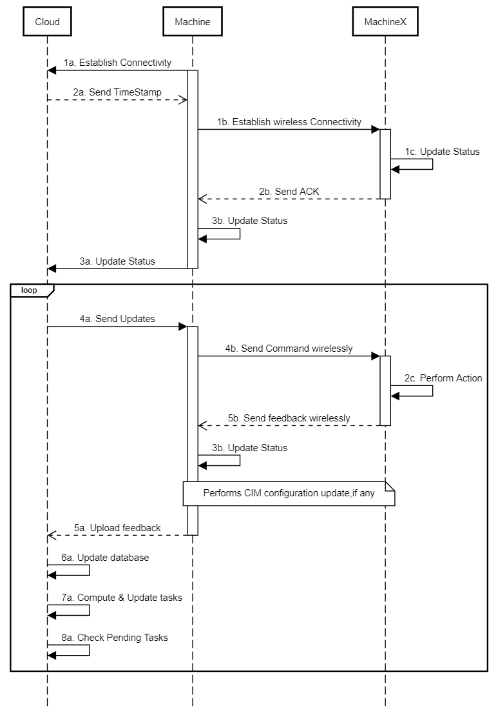
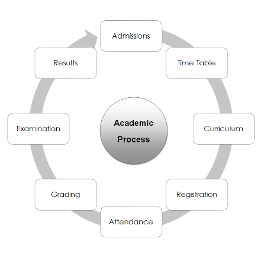

Vikram Rao
Automation Engineer, IIIT Chennai
Areas of Interest: Computer Vision, VR, IoT, Cyber physical system, Machine Learning, Information Systems
Current Research
Research and develop technologies using IoT, Image Processing and Machine Learning for Environment, Health and Industrial Purpose.
We make extensive use of Open source Hardware, Computer Vision techniques in our studies.
Stereo Vision
Like human eyes, We successfully were able to give 3D visual sense to the robots. The robot able to predict depth and recognize 3D coordinates of object. We have enclosed white paper on this with detailed analysis of result. This implementation can be seen in the video as well
Click here for real-life application VIDEO
Click to see FULL IMAGE

Machine to Machine Communication
Machine-to-machine, or M2M, is a broad label that can be used to describe any technology that enables networked devices to exchange information and perform actions without the manual assistance of humans.
Click here for implementation VIDEO
Click to see FULL IMAGE

Cyber physical System
We research and develop Cyber-Physical Systems (CPS) for Environment, Manufacturing, Health Care and Robotics applications. Our models
usually comprise of these three elements: physical hardware(embedded system), network(wireless) and computations(cloud).
Click to see FULL IMAGE

Machine Learning
Worked with Machine Learning for Applications in IoT, Creating game Bots
Computer Vision
Have worked and implemented Computer Vision problems
Information Systems Model
As Automation Engineer and Senior Project Engineer(Past), my role is to develop Online Portals for the institute.
This helps bring quickness and transperancy in the Institute governance.
Click to see FULL IMAGE
